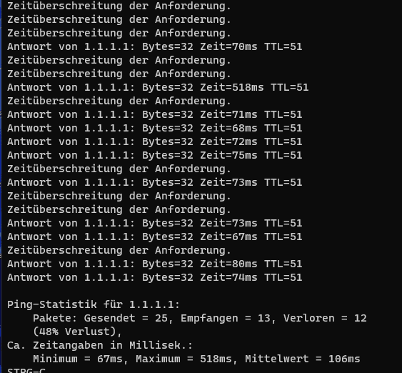

Probleme beim Zugriff auf Webseiten über Magenta in den Abendstunden - Hosting Provider all-inkl.com betroffen, Hilfe benötigt!
sw1
Problem wurde dem Technik Support bereits mitgeteilt
Seit mittlerweile 3 Monaten gibt es in den Abendstunden Probleme Webseiten über Magenta zu erreichen, die beim Hosting Provider all-inkl.com liegen.
Da dort nicht nur meine Firmenwebseite liegt sondern auch die von einigen Kunden ist dies sehr ärgerlich bzw. bin ich seit Wochen mit Beschwerden von Kunden konfrontiert - die ich leider nicht beantworten kann. Die gewünschten Traceroutes wurden dem Support bereits übermittelt - ich hoffe dass es in der Community jemanden gibt der weiterhelfen kann.
- sehr
langsame Ladezeit von allen Webseiten die beim Anbieter all-inkl.com gehosted werden
- seit
ca. Dezember 2022
- täglich egal ob Wochenende oder unter der Woche
- ab
ca. 18:00 bis ca. 23:00 Uhr,
danach funktioniert alles wieder wie gewohnt
- Problem tritt nicht nur in meinem Netzwerk auf, gleiches Problem ebenfalls bei anderen Magenta Kunden
- auf Nachfrage bei all-inkl.com wurde zunächst ein Serverwechsel durchgeführt, um eventuelle Probleme mit dem Server ausschließen zu können, ohne Erfolg
- all-inkl.com wurden bereits pingplotter Bilder gesendet - dort
Hinweis auf Problem mit Knotenpunkt
auf den all-inkl.com keinen Einfluss hat
- Webseiten liegen seit über 10 Jahren bei all-inkl, nie Probleme davor
- im selben Zeitraum gibt es keine Probleme mit der Erreichbarkeit der Webseiten über das Netz von
A1 oder Drei.
Aktuelle Pingplotter Auszüge (tagsüber bzw. von ca. 23:15-17:30 ist hier alles grün)
Weißt du ob das Problem auch im mobilen Netz bei Magenta vorhanden ist? Muss ich heute Abend direkt mal probieren.
sw1
vor 4 Minuten schrieb Stoffii:
Weißt du ob das Problem auch im mobilen Netz bei Magenta vorhanden ist? Muss ich heute Abend direkt mal probieren.
Leider habe ich kein mobiles Magenta, daher weiß ich das leider nicht. In anderen Mobilnetzen funktioniert es ohne Probleme.
Stoffii
vor einer Stunde schrieb sw1:
Leider habe ich kein mobiles Magenta, daher weiß ich das leider nicht. In anderen Mobilnetzen funktioniert es ohne Probleme.
Kannst mir gerne per Privat Nachricht eine Beispiel Adresse schicken. Dann probier ich es am Abend übers mobile Netz aus, und probier auch meine Seite die auch bei All-Inkl liegt.
sw1
vor 6 Stunden schrieb Stoffii:
Kannst mir gerne per Privat Nachricht eine Beispiel Adresse schicken. Dann probier ich es am Abend übers mobile Netz aus, und probier auch meine Seite die auch bei All-Inkl liegt.
Danke, das wäre sehr hilfreich! Leider kann ich keine Privaten Nachrichten senden. (Vielleicht funktioniert es wenn du mir eine schickst?)
bbi
Gewissener Peerings-Noten sind bei Deutsche Telekom belastet. Darunter beim Gaming forum gibts das selbe Problem.
von 18 bis 23 uhr von 20 ping auf 100+ gesprungen seit November-Dezember
zum beispiel ffm-b11-link.ip.twelve99.net , eine Peeringspunkt von telia wo viele webseiten/servers dadurch gehen.
tracert mal die zwischen 18 und 23 uhr, schaut dann genau so aus wie bei deiner Pingplotter, und nach 23 uhr wieder zurück auf 20 ping.
Problem gibts nicht wenns nicht durch deutsche telekom routet.
80.x
62.x
87.x
sind dtag nodes die immer auftauchen beim pingplotter wenns problem gibt.
Wenn es aber nicht durch diese nodes routet, gibts meistens kein Problem.
Beim Hotline wurde mir informiert dass die level 2 Techniker diese Problem bekannt ist und es an irgendein server legen. Leider der Hotline weißt aucht nicht was genau die Techniker dahinter arbeitet.
sw1
Am 8.3.2023 um 22:36 schrieb bbi:
Gewissener Peerings-Noten sind bei Deutsche Telekom belastet. Darunter beim Gaming forum gibts das selbe Problem.
von 18 bis 23 uhr von 20 ping auf 100+ gesprungen seit November-Dezember
zum beispiel ffm-b11-link.ip.twelve99.net , eine Peeringspunkt von telia wo viele webseiten/servers dadurch gehen.
tracert mal die zwischen 18 und 23 uhr, schaut dann genau so aus wie bei deiner Pingplotter, und nach 23 uhr wieder zurück auf 20 ping.
Problem gibts nicht wenns nicht durch deutsche telekom routet.
80.x
62.x
87.x
sind dtag nodes die immer auftauchen beim pingplotter wenns problem gibt.
Wenn es aber nicht durch diese nodes routet, gibts meistens kein Problem.
Beim Hotline wurde mir informiert dass die level 2 Techniker diese Problem bekannt ist und es an irgendein server legen. Leider der Hotline weißt aucht nicht was genau die Techniker dahinter arbeitet.
Danke für die Info! Das klingt genau nach meinem Problem. (Es besteht offenbar nur im Kabelnetz?)
Blöderweise ist bei mir auch mein Onlineshop betroffen, bei dem Abends die Ladezeiten insbesondere von Bildern stark verzögert sind. Und logischerweise bestellen dadurch weniger Leute - wer bestellt schon selbst gerne in einem Onlineshop bei dem die Seite nicht richtig lädt?
Jedenfalls sehe ich dahin auch eine wirtschaftliche Benachteiligung die durch Magenta verursacht wird - der Großteil meiner Kunden kommt aus Wien oder den Landeshauptstädten (hier sind natürlich sehr viele Magenta Kunden). Viele bestellen auch gerne am Abend.
Ich habe seit 2 Wochen keine Rückmeldung mehr vom Magenta Support bekommen. Wird jetzt daran gearbeitet? Ich weiß es nicht. Was soll ich meinen Kunden sagen? Ich kann ja schwer empfehlen ihren Magenta Anschluss zu kündigen?! Meine Kündigung würde das Problem ja anscheinend auch nicht lösen, wenn bestimmte Peeringpunkte betroffen sind. Noch dazu wirkt es ja für meine Kunden auch so als würde das Problem an meiner Homepage liegen, da ja nicht alle Verbindungen betroffen sind.
Über eine Nachricht vom Support oder einem Moderator würde ich mich sehr freuen - das Problem besteht schließlich seit Monaten!
Bearbeitet
von sw1
sw1
Nachdem hier scheinbar nichts unternommen wird (oder vielleicht doch, ich bekomme ja leider keine Informationen zum aktuellen Stand) habe ich meine Arbeitszeit verschwendet und hier einige Thread zusammengetragen, die ein ähnliches Problem beschreiben bzw. bei denen ich vermute dass es einen Zusammenhang (eventuell im Routing/Peering/Knotenpunkte in den Abendstunden) gibt:
Ich würde mich freuen wenn der Support endlich auf dieses Problem aufmerksam wird und etwas unternimmt.
bbi
vor 7 Stunden schrieb sw1:
Nachdem hier scheinbar nichts unternommen wird (oder vielleicht doch, ich bekomme ja leider keine Informationen zum aktuellen Stand) habe ich meine Arbeitszeit verschwendet und hier einige Thread zusammengetragen, die ein ähnliches Problem beschreiben bzw. bei denen ich vermute dass es einen Zusammenhang (eventuell im Routing/Peering/Knotenpunkte in den Abendstunden) gibt:
Ich würde mich freuen wenn der Support endlich auf dieses Problem aufmerksam wird und etwas unternimmt.
Das Problem ist sehr wahrscheinlich nicht von Magenta Österreich Lösbar.
Wie man überall auch sieht, liegt es an der Peeringsnode von Deutche Telekom, Magenta gehöhrt schon zum Deutsch Telekom aber da wir nicht direkt Kunden beim Deutsche Telekom sind, wird uns meistens ignoriert.
Interne Magenta Netz gibts wie Sie sagen kein Problem, deswegen können sie auch nix fixieren.
Ich habe schon auf twitter Dtag deutschland kontaktiert, sie meinen auch dass diese Peering-Problem schon bekannt ist, aber ob sie wirklich was daran arbeitet, weißt keiner, da Sie meinen Sie könne keine weitere Infos geben außer dass diese schon bekannt ist.
sw1
Nachdem weitere 2 Wochen nichts passiert ist, hier ein weiteres Update von meinen täglichen Problemen. Das macht natürlich Spaß, wenn man 30 Fotos mit unter 10 MB runterladen möchte und dafür gleich mal eine halbe Stunde braucht oder länger braucht.
Das nervt und weil es so nervt werde ich noch kurze Zeit warten und dann kündigen. Danke für diese technische Meisterleistung und für den noch viel schlechteren Support.
bitte beachte, dass das hier eine
User hilft User Plattform
ist und hier
kein direkter 1:1 Kundensupport
von Magenta Mitarbeitern gemacht wird. Bei technischen Anliegen, welche hier nicht gelöst werden können, ist unser
Technikteam unter 0676 200 7777
(täglich 8.00 bis 22.00 Uhr) zu kontaktieren.
Magentastische Grüße JD.
Jonathan Dorian
Am 4.4.2023 um 22:25 schrieb sw1:
Danke für diese technische Meisterleistung und für den noch viel schlechteren Support.
Wie geschrieben, ist das eine User hilft User Plattform und kein Magenta Support Kanal. Bei technischen Anliegen sind unsere Techniker:innen unter 0676 200 7777 oder via Live-Chat in der MeinMagenta App zu kontaktieren. Ich bitte um euer Verständnis.
Beste Grüße, JD.
sw1
Ich dachte das Problem hat sich (von selbst?) erledigt. Jedenfalls hatte ich die letzten Monate keine Probleme gehabt.
Nun seit ca. 1-2 Wochen geht es wieder los, dass wieder genau die selben Probleme auftauchen wie bereits im März.
Hat zufällig noch jemand ein ähnliches Problem bemerkt?
kilian3845
Am 21.9.2023 um 21:20 schrieb sw1:
Ich dachte das Problem hat sich (von selbst?) erledigt. Jedenfalls hatte ich die letzten Monate keine Probleme gehabt.
Nun seit ca. 1-2 Wochen geht es wieder los, dass wieder genau die selben Probleme auftauchen wie bereits im März.
Hat zufällig noch jemand ein ähnliches Problem bemerkt?
Hallo ich habe ein 5G Internet von Magenta ab ca. 18-22 Uhr stockt 1.1.1.1 total also Cloudflare fürs Gaming nicht unbedingt Ideal weil Discord etc. darüber laufen und man merkt es halt dann doch wenn man diese Pings bekommt.. ist aber erst seit 2 Tagen so hatte das noch
nie davor das finde ich ja komisch irgendwie irgendwo muss es da drinnen etwas haben es ist ab 18-22 Uhr ca., echt unbrauchbar alles was über Cloudflare läuft Support meint es liegt an Cloudflare aber nein es liegt definitiv an Magenta andere Anbieter haben das Problem mit Cloudflare eben nicht.

grossartig
Am 21.9.2023 um 21:20 schrieb sw1:
Ich dachte das Problem hat sich (von selbst?) erledigt. Jedenfalls hatte ich die letzten Monate keine Probleme gehabt.
Nun seit ca. 1-2 Wochen geht es wieder los, dass wieder genau die selben Probleme auftauchen wie bereits im März.
Hat zufällig noch jemand ein ähnliches Problem bemerkt?
Hallo, ich habe exakt die gleichen Probleme wie du. Websites und Onlineshops, die bei all-inkl.com gehostet werden sind abends so gut wie nicht zu erreichen.

{kind=link}